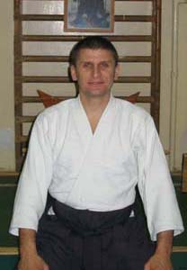
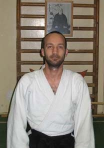

Misogi Dojo története
A Misogi Dojo Budapest szívében található, 1995 óta várja az aikidó iránt érdeklődőket. Alapítóink célja a harmonikus közösség létrehozása volt, ahol a hagyományos értékek és a modern szemlélet találkozik. Edzéseinken a technikák mellett a tudatos testhasználatra és a mentális fejlődésre is nagy hangsúlyt fektetünk. Dojónk rendszeresen hív neves külföldi mestereket, hogy szélesebb látókört nyújtsunk a tanítványoknak. A gyakorlások családias légkörben zajlanak, ugyanakkor megkövetelik a fegyelmezett hozzáállást. Hisszük, hogy az aikido nem csupán mozgás, hanem életre szóló út, amely segít megőrizni a belső békét. Kezdők és haladók egyaránt megtalálják a saját tempójukat, és egymást támogatva fejlődnek. Edzéseink során nagy hangsúlyt kap a sérülésmentes, fokozatos terhelés, így mindenki biztonságban érezheti magát. Modern felszerelés és könnyen megközelíthető helyszín teszi kényelmessé a gyakorlást. Ha szeretnél egy nyitott, támogató közösség része lenni, és a saját utadat járni az aikidóban, köztünk a helyed.
- 🧒 14–20 év (Fiatalok, kamaszok és középiskolások)
Miért próbáld ki az Aikidót?
➡️ Mert segít fegyelmet, testtudatot és önbizalmat építeni, miközben megtanít uralni az impulzusokat és hatékonyan kezelni a konfliktusokat. - 🧑🎓 21–30 év (Fiatal felnőttek, pályakezdők)
Miért próbáld ki az Aikidót?
➡️ Mert kiváló stresszoldó mozgásforma a mindennapi rohanásban, amely mentális fókuszt, egyensúlyt és belső nyugalmat ad a kihívások közepette. - 🧑💼 31–45 év (Dolgozó, családos felnőttek)
Miért próbáld ki az Aikidót?
➡️ Mert segít újra felfedezni a mozgás örömét, miközben testi-lelki feltöltődést nyújt a munkahelyi nyomás és családi teendők mellett — erőszakmentes, de mégis dinamikus. - 🧓 46–60 év (Érettebb felnőttek, új életszakaszban)
Miért próbáld ki az Aikidót?
➡️ Mert az Aikido nem az erőről, hanem az irányításról és a tudatosságról szól — ideális mozgásforma, amely kíméletesen fejleszti az egyensúlyt, hajlékonyságot és szellemi frissességet.
Edzők neve, bemutatása
|  | Becze Zsolt dojo-vezető 5. dan (MNAD) 5. dan (Aikikai) |
|  | Mondik Attila dojo-vezető helyettes 5. dan (MNAD) 4. dan (Aikikai) |